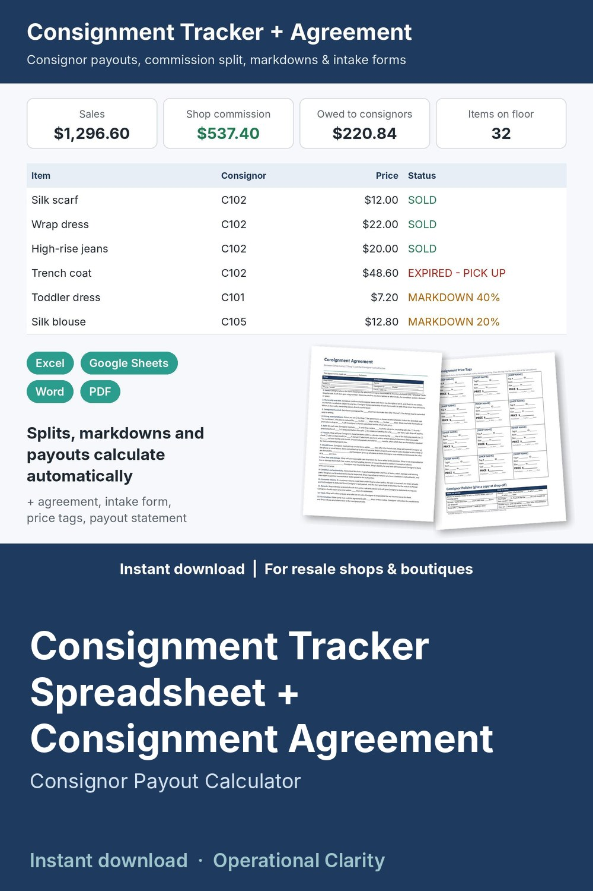

Consignment Tracker Spreadsheet + Consignment Agreement

Know what every consignor is owed, every day: a complete consignment tracker spreadsheet with automatic markdowns, commission splits and one-click payout statements, plus the consignment agreement, intake form and price tags to go with it.
WHAT'S INSIDE
- Consignment Tracker & Consignor Payout Calculator (Excel / Google Sheets, 7 tabs):
* Settings: default consignor split (e.g. 60/40), consignment period, pickup window, two markdown steps (e.g. 20% off after 30 days, 40% off after 60 days), optional card fee taken off before the split
* Consignors: ID, contact details, agreement date, custom split per consignor, payout method; items in, on the floor, sold, sales, earnings, paid, balance owed, DUE NOW and status (PAYOUT DUE / ITEMS TO PICK UP / OK)
* Items: tag #, consignor, description, category, intake date, price; end date, days in shop, markdown %, current price and status calculate (ACTIVE / MARKDOWN 20% / MARKDOWN 40% / ENDING SOON / EXPIRED - PICK UP / SOLD / RETURNED / DONATED); consignor share and shop commission on every sale
* Payouts: log every check, cash, store credit or online payout
* Payout Statement: pick a consignor and a period; items sold, sale price, their share, paid to date and balance due fill in. Print or save as PDF.
* Dashboard: items on the floor and floor value, sales, shop commission, owed to consignors, payouts due now, expired items to pick up, sell-through, average days to sell, 6-month sales chart, sales by category, balance by consignor
- Consignment Agreement (Word + PDF): 14 plain-English sections (items, ownership, consignment period, pricing and markdowns, split, payouts, unsold items and donation, care, loss and damage, condition and authenticity, customer returns, records, taxes, termination) + a key-terms box and signatures
- Consignor Item Intake & Inventory Schedule (Word + PDF): 18-item drop-off list with condition, price and markdown OK, signed by both of you
- Printable Consignment Price Tags (12 per page) and a one-page Consignor Policies sheet
- Consignor Payout Statement (hand-written version), Unsold Item Pickup / Return / Donation Release, and a Payout Log (Word + PDF)
- START HERE guide (PDF)
HOW IT WORKS
1. Set your split, consignment period, markdown steps and pickup window on Settings.
2. Fill in the same terms in the Agreement and Consignor Policies; print the price tags.
3. At drop-off, add the consignor, list the items on the Intake Schedule and sign the Agreement.
4. Add each item on the Items tab. Markdowns and status update every day.
5. When an item sells, type the date and sale price. The consignor's share and your commission calculate.
6. Each month, check DUE NOW, print a Payout Statement for each consignor, pay them and log it.
Example data (a resale boutique with 10 consignors and 83 items) shows how it all connects; delete it and type your own. Yellow cells = type here, green cells = calculated.
Made for consignment shops, resale and thrift boutiques, kids' resale, furniture and home decor consignment, and booth or gallery owners who sell items for others.
FORMATS
- Excel .xlsx (works in Excel and Google Sheets)
- Word .docx (edit in Microsoft Word, Google Docs, Pages or LibreOffice) + PDF, US Letter
This is an instant digital download, no physical item will be shipped.
Editable template, not legal advice. Laws differ by state and country; have it reviewed by a local attorney before you use it.